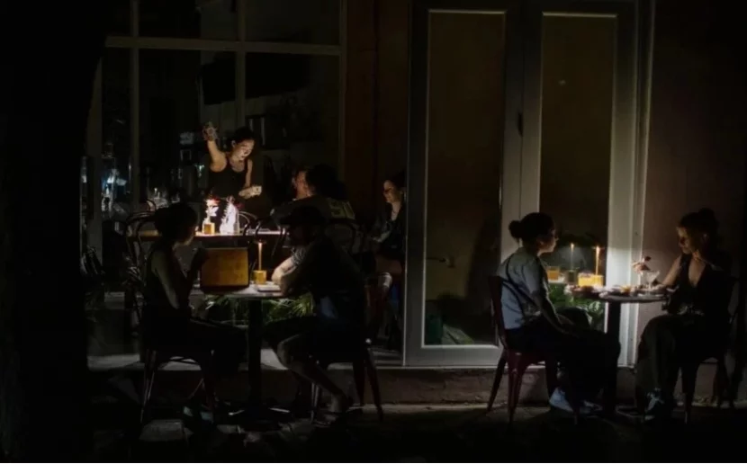

Maribel Ledesma Perez
Maribel Ledesma Perez
Maribel Ledesma Perez
Maribel Ledesma Perez
Maribel Ledesma Perez
Maribel Ledesma Perez
Dominicanos sufren de apagones en Puerto Rico
Reportaje digitalizado
Escena en Plaza Las Américas

La Plaza Las Américas, en San Juan de Puerto Rico, reivindicada por los puertorriqueños como
la más grande y dinámica del Caribe, es un mar de tiendas diversas que en estos días tiene
un dinamismo especial al llenarse de turistas que han venido por la serie de conciertos de
Bad Bunny*, un verdadero fenómeno, pero también muestra una estampa de la vida
de la isla que se ha convertido en una incertidumbre cotidiana: los apagones.
Una vendedora de una tienda de lentes de sol de una gran variedad de marcas, mientras atiende
un cliente observa que el servicio eléctrico pestañea, el servicio retorna casi de inmediato,
pero vuelve a pestañear. No se inmuta y le grita a su compañera:
“ojalá no se caiga el sistema y se nos vaya la luz.”
Relata que los apagones en la plaza ya no son extraños y que hay plantas de emergencias para
las áreas comunes, pero que los comercios siguen funcionando con los focos recargables.
Se estima que el 10 por ciento de los hogares en Puerto Rico ya tienen placas solares con
baterías que les sirven como “inversores”1.
El sistema eléctrico boricua cuenta con una vieja y frágil red de generación
termoeléctrica que se avería con frecuencia, en especial cuando la demanda
aumenta, como es ahora en tiempos de verano.En el verano del 2024 se llegó a
los picos de deficiencia del servicio, pero este año va camino de ser superado
debido a que hay más calor y más demanda.
El propio operador de la red, LUMA Energy, advirtió en marzo que el riesgo de apagones
iba a ser mucho mayor que en el verano anterior debido a la salida programada de varias plantas y
una proyección de aumento de la demanda en las horas pico.